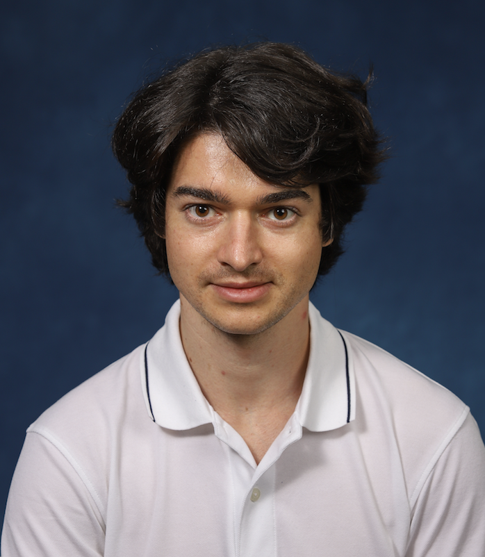

Hi! I'm Marius Constantin, and I am originally from Romania.
I am currently pursuing a Master of Science in Financial Engineering at Stevens Institute, which combines the desired attributes of mathematical modeling, statistical analysis, finance, economics, computer programming skills and systems thinking to solve the financial challenges at the enterprise and the systemic level.
I have a bachelor’s degree in Physics from Princeton University, an MS and a MPhil in Applied Physics from the Yale University, and I completed all requirements short of the dissertation for a PhD at Yale. Previously, I worked in Plasma Physics, Quantum Computing (both theory and experiment), Laser Theory and Statistical Physics. As a student I interned at École Polytechnique and Princeton Plasma Physics Laboratory.
You can find my Princeton Senior Thesis here and my published Yale research here.
I have experience working with mathematical modeling, analytical problem solving, and programming in Matlab, Java, Python and R.
I'm very passionate about non-profit causes around international education and alumni relations. Je parle aussi le français, mais pas très bien.
I encourage Princeton undergraduate and graduate students to contact me through TigerNet.